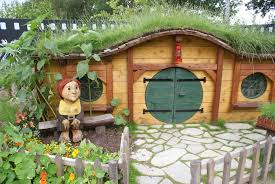

 Хоббиты — весёлый, но в то же время основательный маленький народец. Они совсем как люди, только ростом
вполовину меньше нас, и ноги у них заросли волосами, и живут они не в домах, а в «норах» — удобных жилищах,
выкопанных в земле. Их страна называется Шир, вокруг неё селятся и люди, и эльфы — очень похожие на людей,
но благородные и бессмертные. А в горах обитают длиннобородые гномы, мастера по камню и металлу. Так вот,
нашего хоббита зовут Бильбо Бэггинс; это состоятельный хоббит средних лет, гурман и слагатель песен.
В один прекрасный день его друг, добрый и могущественный волшебник Гэндальф, выдав его за профессионального
вора, посылает к нему тринадцать гномов с тем, чтобы он помог гномам отнять их сокровища у огнедышащего дракона.
Много лет назад дракон захватил их пещерный город и залёг там на груде драгоценностей; неизвестно,
как подобраться к нему, да и дорога в дальние горы трудна и опасна, её стерегут гоблины и тролли-гиганты.
И что ещё хуже, эти свирепые и бесконечно жестокие существа подчиняются могущественному владыке Тёмного царства,
врагу всего доброго и светлого.